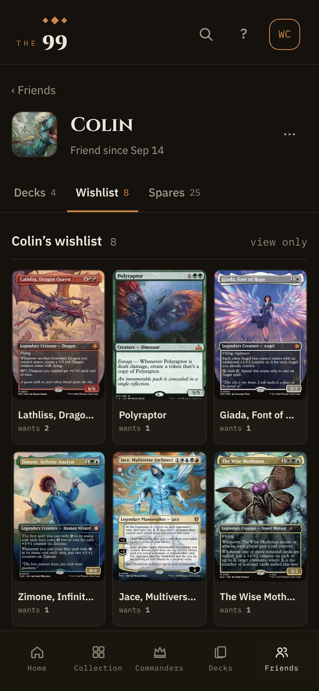
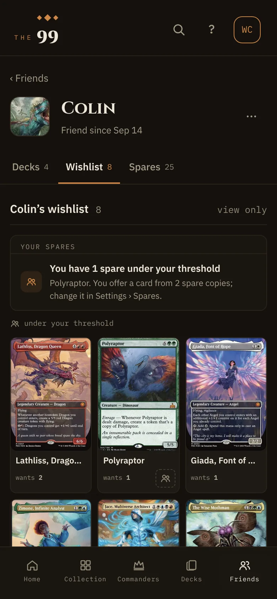
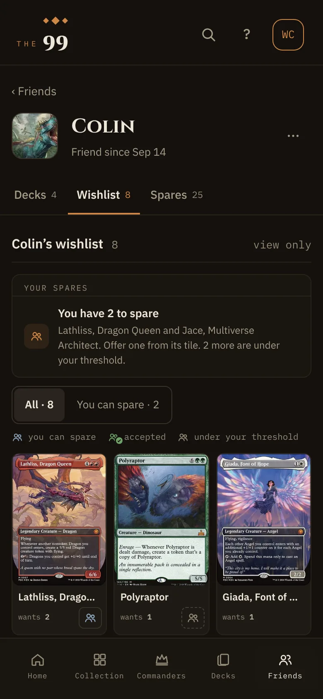
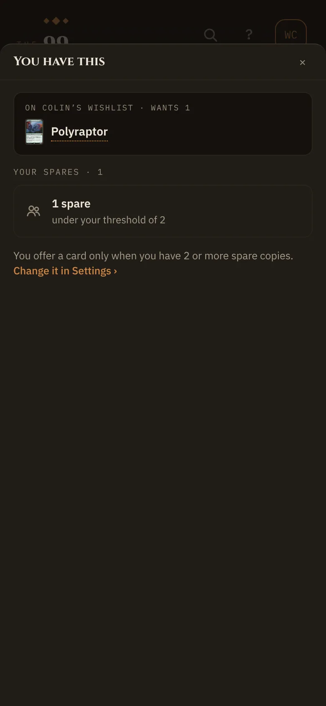
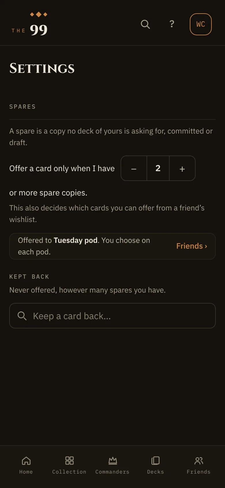
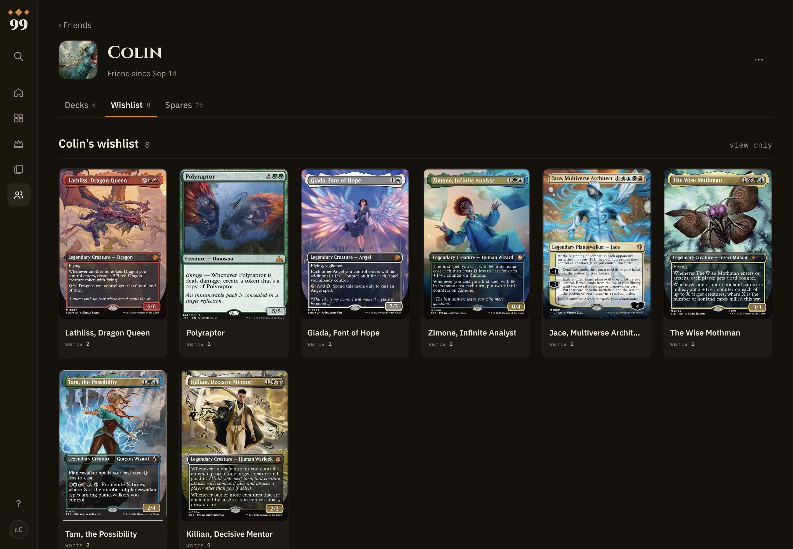
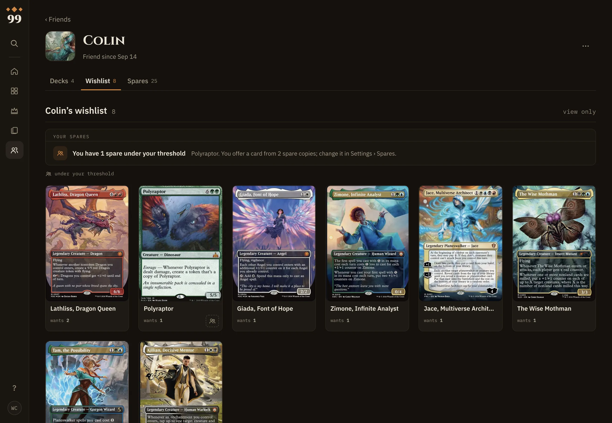
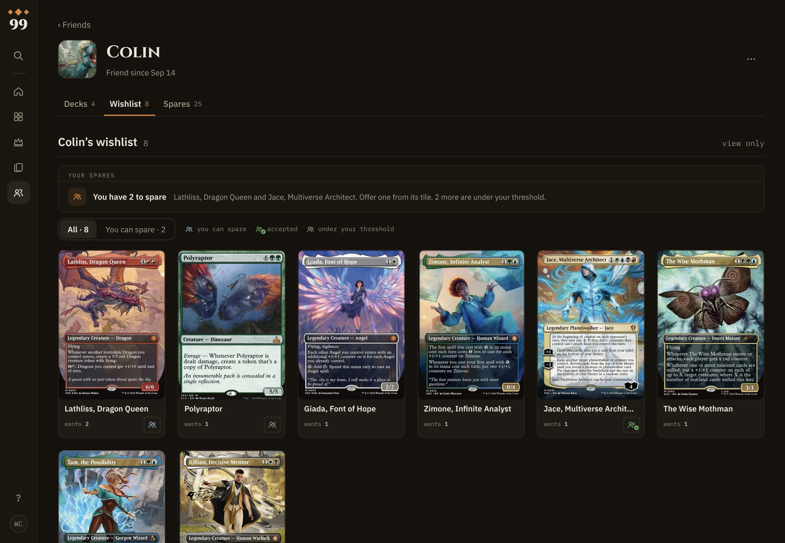
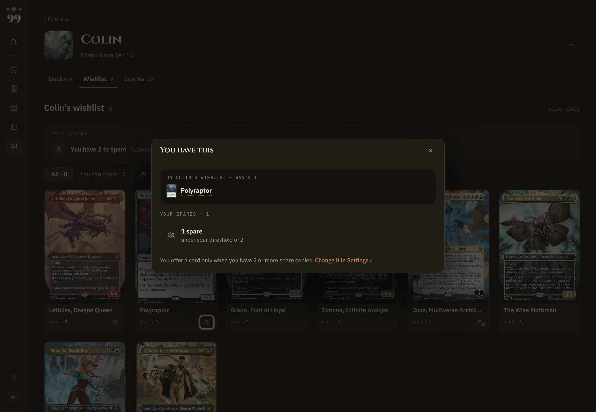
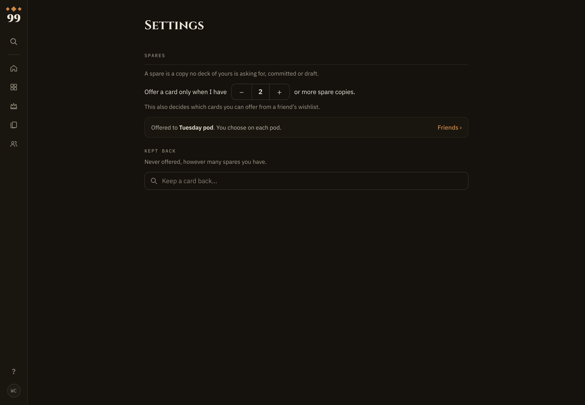

Threshold 2 in Settings, one spare Polyraptor, on Colin's wishlist. Today nothing draws and the feature looks absent (T0). The shipped press, call-out and key carry it, with a faint glyph and a dashed box.

T0 · Today
Nothing on the tab: no call-out, no press. What Hugh saw.

T1 · Only under the threshold
Call-out You have 1 spare under your threshold, no filter, key under your threshold, the faint dashed press on Polyraptor.

T2 · Mixed
Lathliss offerable, Jace accepted, Polyraptor and Tam under: You have 2 to spare … 2 more are under your threshold. The filter counts 2.

T3 · The sheet
1 spare, under your threshold of 2, no Offer. Foot with Change it in Settings ›.

G1 · Settings › Spares
The pointer under the threshold sentence: This also decides which cards you can offer from a friend’s wishlist.

D0 · Today
Nothing drawn.

D1 · Only under the threshold
The call-out's row reads on one line from md.

D2 · Mixed
Filter and key on one line.

D3 · The sheet
640 modal, as shipped.

D4 · Settings › Spares
The same pointer.